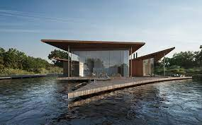

NUESTROS PROYECTOS
Casa Del Bosque, San Martin De Los Andes
Enclavada en el corazón del bosque en San Martin de los Andes, se encuentra una casa de diseño vanguardista que desafía los límites de la arquitectura convencional. Construida con hormigón visto y amplias superficies acristaladas, esta residencia se integra perfectamente con su entorno natural, ofreciendo impresionantes vistas panorámicas de los majestuosos picos de los Andes. El diseño minimalista y elegante de la casa refleja la fusión entre la estética moderna y la belleza natural de su entorno. Los materiales cuidadosamente seleccionados se combinan para crear una sensación de amplitud y luminosidad, al tiempo que proporcionan una sensación de comodidad y tranquilidad. En el interior, la casa es espaciosa y luminosa, con una distribución abierta que maximiza la sensación de amplitud y fluidez. La cocina de diseño, equipada con electrodomésticos de última generación, se integra perfectamente con la zona de comedor y sala de estar, creando un espacio ideal para el entretenimiento y la socialización. La casa cuenta con una amplia terraza que rodea la estructura, permitiendo una conexión continua con la naturaleza circundante. Aquí, se pueden disfrutar de las impresionantes vistas de los Andes mientras se relaja al aire libre. En resumen, esta casa de vanguardia es el resultado de una visión arquitectónica única, que combina la elegancia moderna y la belleza natural para crear un hogar verdaderamente excepcional en San Martin de los Andes.
Casa Del Lago, Lago Escondido
En las orillas del hermoso Lago Escondido se encuentra una casa de ensueño que combina la elegancia y la comodidad. Esta impresionante residencia cuenta con grandes ventanales que ofrecen vistas panorámicas del lago y las montañas circundantes. La casa está construida con materiales de alta calidad, incluyendo una estructura de madera y hormigón visto que se integra perfectamente en el entorno natural. Los espacios interiores son amplios y luminosos, con techos altos y acabados modernos y elegantes. La casa cuenta con todas las comodidades modernas, incluyendo una cocina gourmet completamente equipada, una sala de estar cómoda y acogedora con una chimenea de leña y una sala de cine en casa. También hay una amplia terraza al aire libre donde se puede disfrutar de la vista y relajarse en la comodidad de su hogar. Con su ubicación privilegiada en el Lago Escondido, esta casa es el lugar perfecto para disfrutar de la naturaleza y todas las actividades al aire libre que la región tiene para ofrecer, incluyendo la pesca, el senderismo y el esquí. Es el refugio perfecto para aquellos que buscan un oasis de tranquilidad en medio de la belleza natural de la Patagonia.
Casa De La Montaña, Malargue, Mendoza

La casa en Malargue es un verdadero refugio en las montañas. Ubicada en un paisaje natural impresionante, rodeada de árboles y montañas nevadas, esta casa de diseño rústico es el lugar perfecto para disfrutar de la tranquilidad y la belleza de la naturaleza. Construida con materiales locales, como madera y piedra, la casa se integra perfectamente en el paisaje, y cuenta con amplios ventanales que permiten disfrutar de las vistas panorámicas desde cualquier lugar de la casa. En su interior, la casa está equipada con todas las comodidades modernas, como calefacción central, cocina completa y una acogedora chimenea para disfrutar en las noches frías de invierno. Además, cuenta con amplias áreas al aire libre, como una terraza con parrilla y un jardín perfectamente cuidado, para disfrutar de momentos inolvidables en familia o con amigos. Sin duda, esta casa es un verdadero oasis en medio de la montaña, donde se puede disfrutar de la tranquilidad y la belleza de la naturaleza en su máxima expresión.